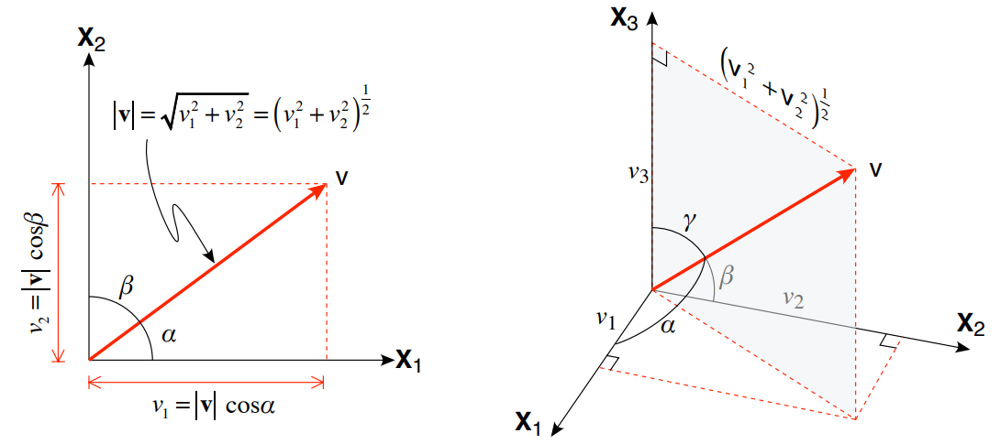
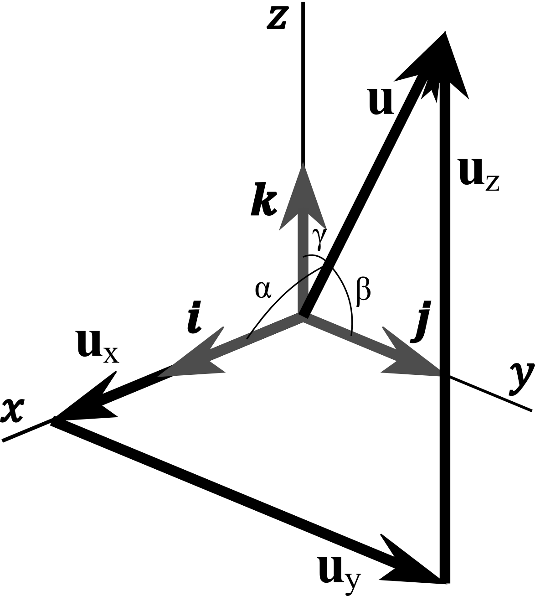
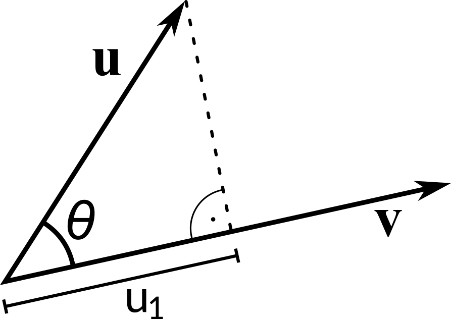
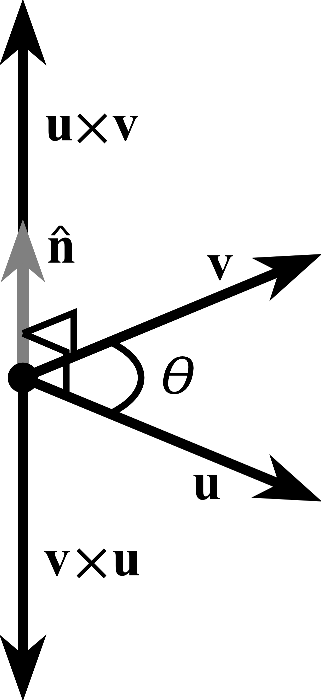
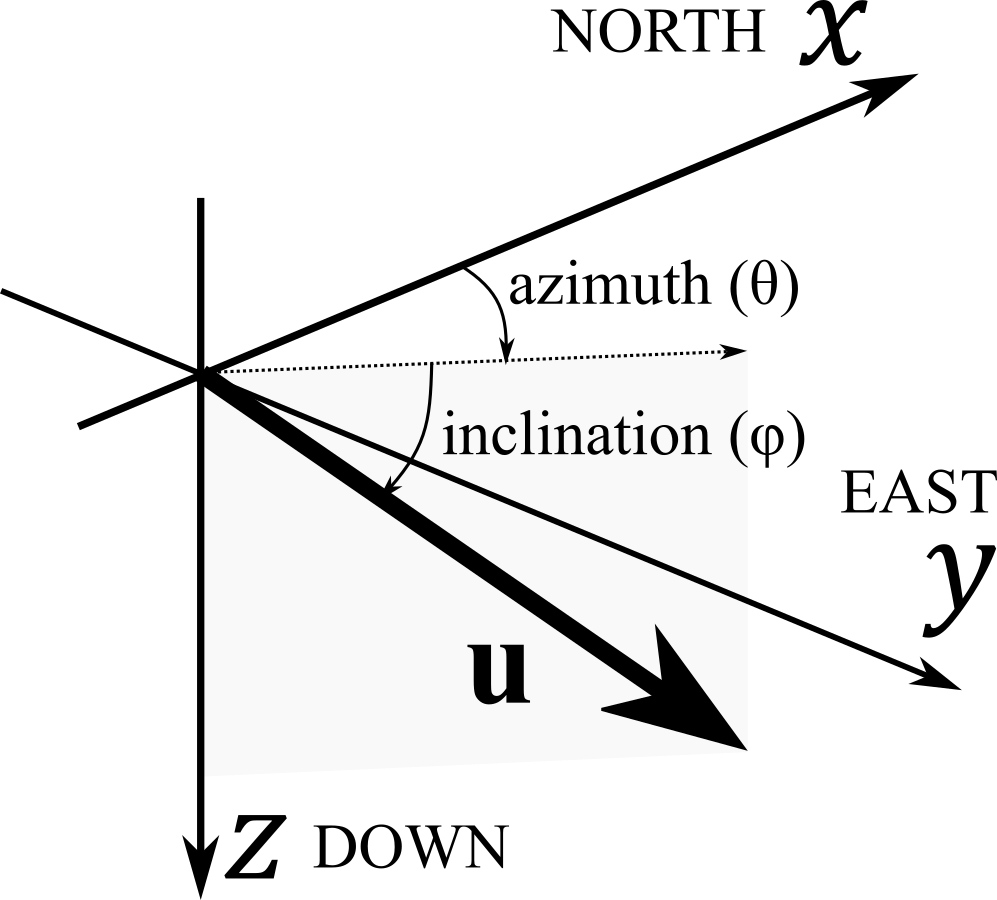

Vectors#
Most structural geology students have learned the basics of vectors in their math courses. We’ll first review those basic concepts and then put that knowledge to work because, as mentioned in the last chapter, most linear features that we might wish to measure in structural geology are vectors.
Because structural geometry is three dimensional, all of our vectors will have three components. Each of the three numbers that define a vector refer to a specific coordinate axis: for example, \(u_2\) (or \(u_y\)) is the value of our vector, \(\boldsymbol{u}\), projected onto the second axis of the coordinate system, \(X_2\) or \(Y\). In a NED coordinate system, \(u_2\) is the projection of \(\boldsymbol{u}\) onto the East axis, but in an ENU coordinate system, \(u_2\) is u projected onto the North axis. Therefore, the numbers that define a vector depend on the specific coordinate system. We write out vector as:
u = vec(2, -1, 3)
v = vec(1, 2, -1)
Vector magnitude#
One of the most fundamental characteristics of a vector is its length or magnitude. Magnitude is a scalar quantity because it has no directional significance and furthermore, it is the same in all coordinate systems. The magnitude is given by:
In two dimensions, you can see that the magnitude is calculated from the Pythagorean theorem which gives the length of a hypotenuse as the square root of the sum of the squares of the two sides. The extension to three dimensions is straightforward.
{kind=link}
abs(u)
3.7416573867739413
Unit vector#
{kind=link}
But, what if we don’t care about the magnitude? What if we are only interested in the orientation of our vector? It is convenient to represent direction by unit vector, i.e. the vector with length of one. Any vector could be normalized to unit vector by dividing each of it’s components by its magnitude.
The projection of a unit vector onto a coordinate axis is just equal to the cosine of the angle that the vector makes with that axis.
Thus, the components of a unit vector are:
u.normalized()
Vector3(0.535, -0.267, 0.802)
Vector addition, subtraction and scalar multiplication#
Vector addition or subtraction from another is no more complicated than adding, or subtracting, the individual components:
And likewise
{kind=link}
u + v
Vector3(3, 1, 2)
Dot product#
Dot product or scalar product is an algebraic operation between two vectors. The dot product may be defined algebraically or geometrically. Conceptually, dot product can be thought of as multiplying the length of one vector by the component of the other vector which is parallel to the first:
Geometrically, it is the product of the magnitudes of the two vectors and the cosine of the angle between them.
Algebraically, it is the sum of the products of the corresponding entries of the two sequences of numbers.
Two vectors are orthogonal if the dot product of those two vectors is equal to zero.
u.dot(v)
-3
Vector projection#
The vector projection of a vector \(\boldsymbol{u}\) on a nonzero vector \(\boldsymbol{v}\) (also known as the vector component of \(\boldsymbol{u}\) in the direction of \(\boldsymbol{u}\)) is the orthogonal projection of \(\boldsymbol{u}\) onto a straight line parallel to \(\boldsymbol{v}\). It is a vector parallel to \(\boldsymbol{v}\), defined as:
{kind=link}
where \(u_1\) is scalar projection. Using definition of cosine in right-angled triangle and dot product definition, we can write:
Consequently,
u.proj(v)
Vector3(-0.5, -1, 0.5)
Cross product#
The cross product \(\boldsymbol{u} \times \boldsymbol{v}\) is defined as a vector that is perpendicular to both \(\boldsymbol{u}\) and \(\boldsymbol{v}\), with a direction given by the right-hand rule and a magnitude equal to the area of the parallelogram that the vectors span.
{kind=link}
The cross product is defined by the formula
or in matrix notation
The cross product is anticommutative
u.cross(v)
Vector3(-5, 5, 5)
Vectors in geology#
The compass measurements are commonly in spherical coordinates i.e. trend or dip direction (\(\theta\)) and plunge or dip (\(\varphi\)). Plunge is used to describe the tilt of lines, the word dip being reserved for planes.
{kind=link}
The linear feature has (a) the plunge direction or trend and (b) the angle of plunge. The plunge direction is the direction towards which the line is tilted. The angle of plunge is the amount of tilt; it is the angle, measured in the vertical plane, that the plunging line makes with the horizontal. The angle of plunge of a horizontal line is 0° and the angle of plunge of a vertical line is 90°.
Linear features (lines) are represented as vector:
Planar fetaure that is not horizontal is said to dip. There are two aspects to the dip of a plane (a) the direction of dip, which is the compass direction towards which the plane slopes; and (b) the angle of dip, which is the angle that the plane makes with a horizontal plane. The direction of dip can be visualized as the direction in which water would flow if poured onto the plane. The angle of dip is an angle between 0° (for horizontal planes) and 90° (for vertical planes).
Planar features (planes) are represented by normal vector:
With APSG the 3D vector could be defined using trend and plunge notation:
v = vec(130, 20)
while linear and planar features could be defined as lineation or foliation
l = lin(120, 40)
f = fol(210, 30)
quicknet(f, l, fol_as_pole=False)